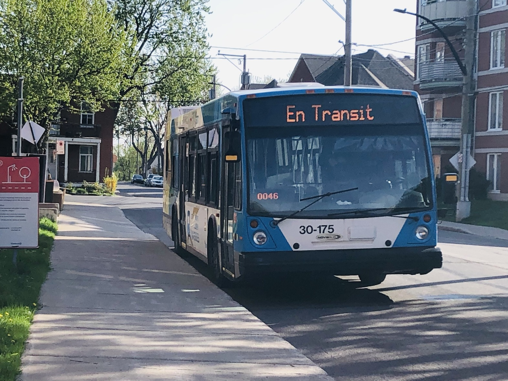
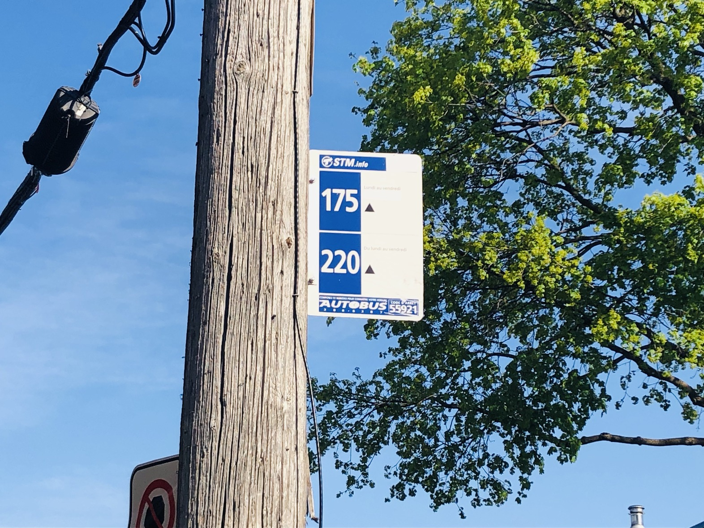

PUBLIC TRANSIT
Buses

Buses in Montreal are really useful for getting around, especially to places the metro doesn't go. On the island, they're run by the STM and cover a lot of different areas. Some buses come often, even at night, so it's easy to travel anytime. They're a big part of daily life in Montreal.
